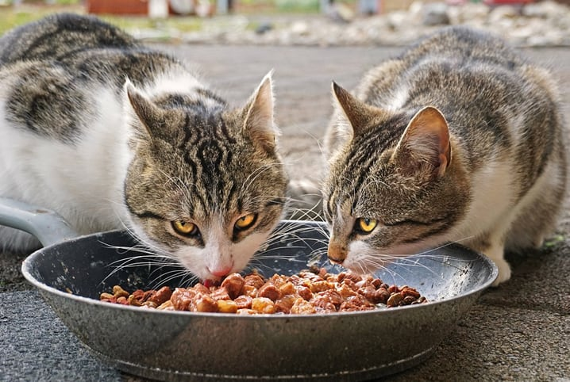

Os gatos domésticos, da espécie felis catus, são animais mamíferos e carnívoros que podem pesar de 2,5 kg até 12 kg dependendo da raça, que varia entre cerca de 250 no mundo. Eles tendem a ser animais muito independentes, até mesmo dormindo por cerca de 12 a 16 horas por dia, mas precisam de cuidados especiais e interações sociais para se manterem saudáveis, evitando o acúmulo de estresse e outros problemas para o animalzinho. Juntamente com os cachorros, são os animais mais domesticados no mundo, e a tendência é que existam mais gatos de estimação do que cachorros.
Gatos têm um instinto de caçador e de sobrevivência muito aguçado, por isso é comum que eles não se deem bem com animais que não conhecem pela primeira vez, e é melhor criar o seu em casa do que deixá-lo ser um gato de rua e deixá-lo exposto a brigas e doenças, já que a expectativa de vida de um gato de rua é aproximadamente 4x menor do que a de um gato doméstico, que viveria cerca de 15 anos. (Logo; o gato de rua vive em média 3,5 anos, de 2 a 5).
Ambientação
Para fornecer um ambiente saudável à um gatinho, são necessárias algumas considerações importantes, como um ambiente calmo e silencioso o suficiente para refeições; um ambiente calmo para dormir; e um ambiente não tão perto do ambiente de dormir, para as necessidades do gato, em ambientes domésticos a famosa caixa de areia. Além das necessidades fisiológicas do gato, também é preciso sempre se atentar aos ambientes oferecerem estímulos e interações sociais. (com o dono, ou outros gatos) Gatos gostam bastante de escalar e pular em lugares, além de alimentar seu instinto caçador, então alguns brinquedos e locais estimulantes para seus gostos são muito adequados para uma saúde adequada.
Alimentação
A alimentação dos gatos é, naturalmente, carnívora, mas também podem comer algumas frutas específicas, descascadas e picadinhas em pedaços pequenos, como: melão, melancia, pêra, banana e maçã. Obviamente, as melhores opções para uma alimentação rentável é a alimentação por rações de alta qualidade, além de petiscos ocasionalmente, entretanto a alimentação caseira por carnes também é adequada, mas com algumas restrições: gatos podem comer tanto carne de boi, frango, porco e peixes, mas cuidado às carnes de peixes crus por causa de possíveis bactérias e parasitas que podem causar problemas digestivos, as preferências de peixes para maior segurança são salmão e atum frescos. Alimentos estritamente proibidos são importantes de ressaltar, como frutas muito ÁCIDAS, entre elas limão, kiwi, abacaxi, laranjas e uvas, já que o estômago do pequeno felino não tem a mesma resistência que os nossos. 
Cuidados Gerais
Entre os cuidados gerais para se cuidar de um gato além do ambiente e alimentação, está o pesamento mensalmente para garantir que a alimentação esteja adequada e suficiente, evitando a obesidade ou desnutrição, e também o crescimento quando filhote, que inclusive se deve pesar todo dia, depois alternadamente, depois semanalmente, até crescer o suficiente para pesagem mensal.
Além disso, gatos não podem se molhar devido ao alto estresse, e são suficientes de se auto-limpar na maioria devastadora das situações, além dos feromônios produzidos pelo seu organismo, que são "lavados" pela água.
Por isso, confie na limpeza do seu gato a ele mesmo! Exceto em situações necessárias, mas algo que você pode fazer para ajudar seu gatinho com seus pelos é escovar o pelo com uma escova para gatos adequada frequentemente, para evitar que ele fique com o pelo embaraçado, já que esse coitado se limpa com a língua.
Além disso, uma fonte de água ou um potinho cheio de água para ele é necessária, juntamente de sempre manter a caixa de areia de suas necessidades limpas, sempre mantendo uma distância entre ambiente de refeição e de necessidades.
Exemplares de gatos exóticos
Coisas que gatos não gostam:
Comportamento dos gatos:
Por fim, os gatos são uma espécie domesticável muito adorável e única, recomendamos para todo mundo!